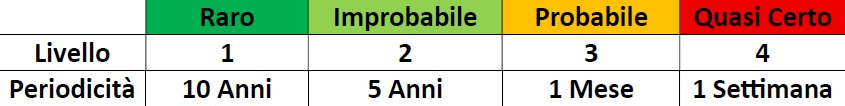
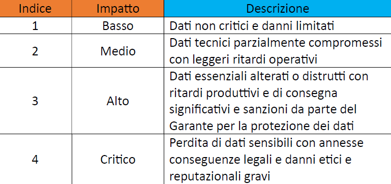
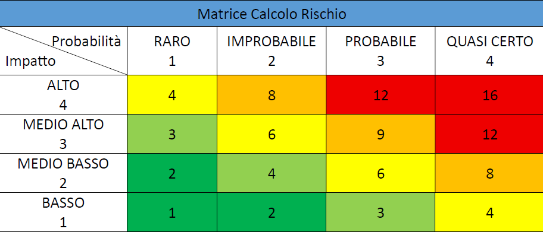
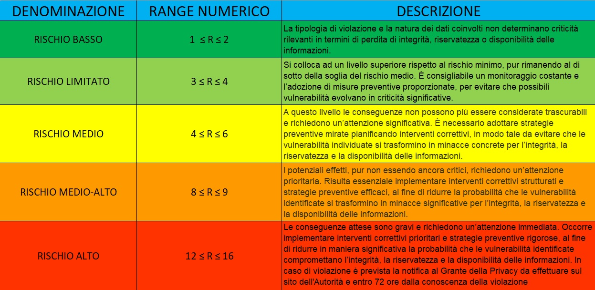

Home
Benvenuti sul sito dedicato alla 'Gestione del Rischio Aeronautico', la piattaforma è interamente dedicata al calcolo del fattore di rischio per le aziende aeronautiche. Attraverso il menu laterale è possibile esplorare le varie sezioni, ognuna di esse dedicata a un aspetto specifico per il processo in esame: i riferimenti normativi di settore, la visualizzazione e l'interpretazione delle matrici di rischio, la simulazione dei calcoli secondo la regola generale, le Best Practice da adottare, la documentazione disponibile in formato PDF e infine la valutazione complessiva del servizio offerto. L'obiettivo è di supportare i professionisti e le aziende nel raggiungimento di standard di sicurezza sempre più elevati, fornendo gli strumenti necessari per una gestione consapevole e accurata del rischio.
Riferimenti normativi
Di seguito sono riportati i principali riferimenti normativi e standard che costituiscono la base per il calcolo del fattore di rischio e la gestione della sicurezza:
- Regolamento UE 2016/679 (GDPR): obblighi per la protezione dei dati personali di dipendenti, clienti e fornitori;
- EASA (European Union Aviation Safety Agency): agenzia europea che stabilisce i requisiti tecnici e le procedure per la sicurezza aerea in Europa, incluse linee guida specifiche come l'EASA Cybersecurity Framework;
- ICAO (International Civil Aviation Organization): agenzia specializzata delle Nazioni Unite che stabilisce standard globali. L'Annesso 19 - Safety Management - è fondamentale per l'implementazione dei Sistemi di Gestione della Sicurezza (SMS);
- ENAC (Ente Nazionale per l'Aviazione Civile): autorità italiana che applica e supervisiona l'implementazione delle normative EASA e ICAO sul territorio nazionale;
- ISO/IEC 27035: linee guida per l’identificazione, l’analisi e la risposta agli incidenti informatici, con indicazioni sulle misure di prevenzione;
- LVS & ISO/IEC 27001: standard Leonardo interno basato sulle normative internazionali per la gestione della sicurezza delle informazioni;
- D.lgs. 81/2008: riferimento legislativo relativo alla sicurezza fisica e organizzativa dei lavoratori;
- Standard interni di sicurezza: politiche aziendali configurate seguendo le linee guida degli enti nazionali e sovranazionali di certificazione.
Tabelle del Rischio
La valutazione del rischio si basa sulla combinazione di due fattori: la Probabilità che un evento si verifichi e l' Impatto che genera le conseguenze.
Le tabelle del rischio rappresentano strumenti essenziali per l’analisi, consentendo l’incrocio sistematico dei due parametri al fine di determinare in maniera quantitativa il fattore di rischio.
Di seguito sono riportate le tabelle utilizzate per il calcolo:
Valutazione delle Probabilità (P)

Valutazione dell' Impatto (I)

Matrice di Calcolo del Rischio

Denominazione del Rischio

Regola Generale
La regola generale fornisce la base per il calcolo del fattore di rischio, combinando la probabilità di occorrenza di un evento con la gravità delle sue conseguenze.
R = I × P
- R = Fattore di Rischio
- P = Probabilità che si verifichi una violazione o un incidente di sicurezza/privacy
- I = Impatto o gravità con annesse conseguenze aziendali
Questa formula permette di tradurre in un valore numerico il livello di rischio, utile per definire priorità di intervento e misure di mitigazione.
Simulazione del calcolo del fattore di rischio
Inserisci gli indici inerenti all'impatto (I) e alla probabilità (P) (da 1 a 4).
R = × = ?
Best Practice Aeronautiche
In questa pagina sono riportati alcuni suggerimenti da adottare in un’azienda aeronautica per prevenire o ridurre i rischi legati alla sicurezza e alla privacy:
- Miglioramento connuo sulla base di L.V.S. e O.C.S.I.: Garantire efficacia e conformità agli standard di sicurezza aeronautica, affrontare nuove minacce e vulnerabilità, e rispondere adeguatamente ai requisiti normativi e ai possibili attacchi di Cyber Security.
- Formazione continua e specializzata: Organizzare corsi incentrati sulle procedure e le politiche di LVS, per offrire maggiore consapevolezza in ambito di sicurezza informatica e regolamentazione privacy nel settore aeronautico all’intera popolazione aziendale.
- Controllo rigoroso degli accessi fisici: Adottare l'autenticazione biometrica e la limitazione dei privilegi utente, con monitoraggio continuo e audit interni.
- Definizione di Recovery Plan e Incident Response: Elaborare piani specifici per il settore aeronautico, aerospaziale e della difesa, per garantire continuità operativa e sicurezza dei dati trattati ed elaborati.
- Audit regolari e valutazioni di rischio aggiornate: Mantenere il sistema di sicurezza in linea con i riferimenti normativi e tecnologici in evoluzione.
- Collaborazione con enti regolatori e certificatori: Partecipare a incontri di settore con enti come EASA, ENAC, FAA per un aggiornamento costante sulle minacce emergenti.
Download
In questa sezione è disponibile il download del documento "Guida al calcolo del fattore di rischio", all'interno del quale è possibile visionare le informazioni e le linee guida necessarie per il calcolo del fattore di rischio.
Valutazione Finale
Per migliorare i contenuti e valutare il lavoro, si prega di rispondere ad alcune semplici domande. Il feedback finale verrà inviato all'indirizzo email del creatore della pagina, garantendo il pieno rispetto della privacy.